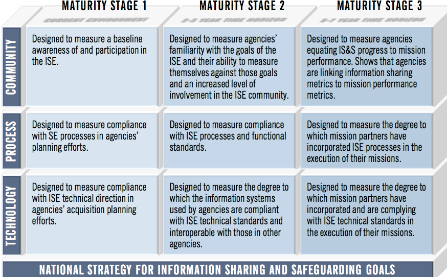
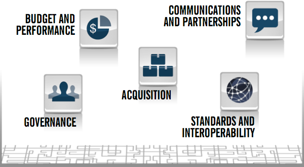

Information Sharing Environment
2013 Annual Report to the Congress
NATIONAL SECURITY THROUGH RESPONSIBLE INFORMATION SHARING
NATIONAL SECURITY THROUGH RESPONSIBLE INFORMATION SHARING
This section addresses progress on oversight and management functions that support information sharing and safeguarding, including the alignment and harmonization of governance bodies, performance management, training, and information sharing and safeguarding incentives within the ISE.
The following list of findings highlights accomplishments and opportunities for improvement. Further detail is provided in the pages that follow.
The Federal Chief Information Officer (CIO) Council, the Steering Committee, and the Information Sharing and Access Interagency Policy Committee (ISA IPC) are overseeing the implementation of the National Strategy priority objectives through their respective working groups;
DHS and FEMA delivered introductory and intermediate risk analysis training courses for fusion center analysts;
DHS sponsored a bi-monthly series of specialized analytic seminars designed to enhance the capabilities of fusion center analysts to effectively monitor and evaluate potential threats in analysts' areas of responsibility;
DHS, in partnership with the U.S. Secret Service (USSS), sponsored a cyber-analysis training pilot program focused on the current threat environment, best practices, and resources available to fusion center analysts;
The FBI held the first annual National Cyber Executive Institute, a three-day seminar for training leading industry executives on cyber-threat awareness and information sharing;
DHS partnered with the Nationwide Suspicious Activity Reporting (SAR) Initiative (NSI) Program Management Office (PMO) to support the delivery of a series of SAR analysis courses designed to help analysts better understand the processes for reviewing, vetting, and analyzing SAR;
The National Maritime Intelligence-Integration Office (NMIO), in partnership with the NSI PMO and in coordination with the U.S. Coast Guard (USCG), is delivering a new SAR awareness training module to increase awareness among the maritime sector's workers, security personnel, and executives;
The National Information Exchange Model (NIEM) Biometrics Domain (NBD) kicked off a new training initiative, the first in a series of sessions which focus on tailoring NIEM resources to best reach the biometrics community; and
The office of the PM-ISE launched the Data Exchange Toolkit via the Building Blocks of the ISE website. The toolkit guides users through the basic steps needed to evaluate and improve existing data exchanges.
Responses to the 2013 ISE Performance Assessment Questionnaire (PAQ) show mixed results with respect to agency adoption and implementation of incentive tools for information sharing and safeguarding. Ninety percent of responding agencies—a 10% increase from last year—reported that "information sharing and collaboration" is an evaluated performance objective for employees with direct ISE responsibilities. However, responding agencies reported a decrease in the number of candidates nominated for information sharing and collaboration awards compared to the previous year.[54]
Oversight of the implementation of the National Strategy for Information Sharing and Safeguarding (National Strategy) is a government-wide effort being carried out by three committees—the Federal CIO Council, the Steering Committee, and the ISA IPC—each of which uses working groups for these efforts.[55]
Given the number and diversity of stakeholders and communities involved, the ability to convene agencies from across the government in mature committee structures is critical to getting partners to the table, and to agreeing upon efficient implementation plans.
To support these efforts, ISE agencies are increasingly assigning dedicated staff to oversee information sharing and safeguarding activities, and to participate in interagency processes to implement whole-of-government best practices. According to the 2013 ISE PAQ, 95% of ISE agencies report that, in compliance with Executive Order (EO) 13587, they have designated a senior official who is accountable for the sharing and safeguarding of classified information on computer networks.
In 2013, the office of the PM-ISE aligned the ISE performance management framework to the priority objectives in the National Strategy. Comprising a roadmap for ISE agencies, the framework provides maturity-driven, time-sequenced actions for agencies as they implement National Strategy priority objectives and execute other information sharing and safeguarding activities in response to annual ISE Implementation Guidance. The framework's performance measures allow the office of the PM-ISE to assess the maturity of the nations' ability to detect, analyze, and respond to terrorism, WMD, and homeland security threats.
To assist agencies in planning for and executing the framework's goal-based initiatives, the office of the PM-ISE created a set of mission-based test scenarios that translate strategic goals and initiatives into mission-specific narratives. Each narrative is specific to an ISE stakeholder's mission, and each shows how that mission may be impacted as information sharing and safeguarding capabilities mature—from current capabilities to those that are expected in five to seven years. The National Strategy prioritizes the reusable and cross-cutting capabilities of the ISE and validates the mission-based test scenarios in the ISE performance framework, which are described in detail in Appendix B. Mission-based test scenarios assist the ISE by demonstrating information sharing priorities and capabilities in a mission context, and allow the ISE to assess progress on desired capabilities by providing a line-of-sight view from a National Strategy objective to an ISE cross-cutting capability to an agency's program implementation.
For each scenario, PM-ISE has created performance measures that reflect expectations for information sharing and safeguarding capabilities at each level of maturity in the areas of community, process, and technology.[56]This gives agencies the tools they need to set milestones and track progress made towards the strategic goals. These measures are standardized across all mission scenarios—a methodology which provides a common lexicon for discussing the actions needed to achieve our strategic goals for each ISE stakeholder mission. ISE agency performance data is an output of this process, as discussed throughout this Report, and is detailed in Appendix A.

Figure 5. ISE Performance Framework Capability Areas and Maturity Stages
The White House issues programmatic guidance for responsible information sharing. The PM-ISE subsequently issues ISE Implementation Guidance that provides more specific direction for agency activities in order to achieve the priorities defined in the programmatic guidance. The implementation guidance provides the basis for an objective, system-wide set of performance goals for the following year, as required by IRTPA. [lxxi]
The programmatic guidance defines funding priorities for budget-year development. The implementation guidance, developed collaboratively with the agencies, defines near-term activities for agencies, and informs agencies’ budget-year development.
ISE Implementation Guidance is an important tool for coordinating the ISE-specific activities of federal agencies. The office of the PM-ISE, through the ISA IPC governance process, tracks the progress of these activities and milestones, ensuring that the ISE continues to advance toward its goals and objectives, and informs performance goals for the following year. Actions are capabilities-focused, aligned with mission objectives, and subject to the annual performance assessment process.
Throughout the year, the office of the PM-ISE works with agencies to complete the actions specified in the ISE Implementation Guidance. Table 2 provides a status of actions overdue, underway, and due to be completed during the period of July 1, 2012 to May 31, 2013. A detailed account of ISE investments can be found in Appendix C.
Table 2. Progress toward ISE Implementation Guidance.
Implementation Guidance Action |
Due |
Owner |
Status |
|---|---|---|---|
Conduct independent assessments of department and agency compliance with established safeguarding policy and standards. |
31-Mar-12 |
DoD/NSA |
Not Complete |
Deliver to the PM-ISE an inventory of existing federal, state, local and tribal public safety information systems that could be migrated to a cloud configuration. |
30-Sep-12 |
DOJ |
Not Complete |
Establish processes to monitor and report fusion center compliance with respect to privacy, civil rights, and civil liberties requirements. |
30-Sep-12 |
DHS |
Complete |
Implement process to monitor NSI compliance with privacy, civil rights, and civil liberties requirements. |
30-Sep-12 |
DOJ |
Complete |
Finalize mechanisms to share information on adjudicated radiological shipments; standardizing information sharing on general radiological shipments and licenses; and sharing post-seizure analysis and information. |
30-Sep-12 |
DHS, DOT, NRC |
Not Complete |
With local and tribal law enforcement entities at ports of entry, institutionalize cargo screening information sharing, including screening related to WMD, and disaster response and emergency management information sharing. |
30-Sep-12 |
DHS, DOJ |
Not Complete |
Assemble individual agency-wide governance responsible for agency-wide coordination of information sharing activities for information exchange standards, federated trust standards, messaging framework standards, and information security framework standards. |
30-Sep-12 |
DoD, DHS, DOJ, DOS |
Complete |
Identify the credential provider for the required level of assurance credentials for each system. |
29-Mar-13 |
All |
Not Complete |
Deliver to the PM-ISE an agency-specific report outlining the work completed to date and planned activities for FY 2014 and FY 2015. |
30-Mar-13 |
DoD, DHS, DOJ, DOS |
Complete |
Deliver to the PM-ISE an IC-specific report outlining the work completed to date and planned activities for FY 2014 and FY 2015. |
30-Mar-13 |
ODNI |
Complete |
For the actions marked “not complete,” PM-ISE will work through the ISA IPC governance process to bring these actions to closure. |
|||
Over the next year, with the ISA IPC, the PM-ISE intends to integrate the governance, performance framework, budget and performance integration processes described above, as well as other processes into an ISE Management Plan. The concepts of the ISE Management Plan are discussed further in the Way Forward of this Report.
Successful sharing of terrorism-related information across the government, with the private sector, and with international allies—in the right format, with the right people, and in a manner that protects privacy, civil rights, and civil liberties—depends upon each individual in the ISE consistently and properly executing responsible information sharing duties. This consistent execution grows out of robust, agency-based programs that provide sustained training to analysts, operators, and investigators with direct ISE responsibilities.
In response to the 2013 ISE PAQ, 86% of agencies reported implementing mission-specific training that supports information sharing and collaboration. 93% of agencies that have implemented this type of training reported seeing improvements with respect to information sharing and stewardship as a result of these training programs.[57]
DHS Office of Intelligence and Analysis (I&A) worked with the DHS Homeland Infrastructure Threat and Risk Analysis Center (HITRAC) and FEMA to deliver introductory and intermediate risk analysis training courses for fusion center analysts. The courses were developed to help intelligence analysts and critical infrastructure protection analysts gain an enhanced understanding of risk analysis through the application of the core components of risk (threat, vulnerability, and consequence), and by highlighting sample fusion center risk products. Participants gained the appropriate training, tools, and mentoring to develop a sample fusion center risk product and a stronger peer-to-peer network. DHS has delivered more than 16 of these trainings in 12 states to date.
Beginning in February 2013, DHS sponsored a bi-monthly series of specialized analytic seminars designed to enhance the capabilities of fusion center analysts by bringing together a diverse range of subject matter experts in seminars to discuss the knowledge, skills, and resources necessary to effectively monitor and evaluate potential threats in analysts’ areas of responsibility. The series addressed the following topics in the context of fusion center operations: Human Trafficking; Financial Crimes; All Hazards; Gangs; Maritime; and Drugs.
Forty-five fusion center analysts participated in the first seminar on human trafficking. The workshop provided an overview of human trafficking indicators, briefings on trafficking trends and tactics, as well as a panel discussion on resources available to support state and local analysts. The seminar also included several case studies presented by state and local officials on human trafficking products. Partner organizations included the DHS Blue Campaign, the FBI, the Federal Law Enforcement Training Center, ICE, and the Human Smuggling and Trafficking Center (HSTC).
In November 2012, DHS I&A, in partnership with USSS, sponsored a cyber-analysis training pilot program. Approximately 20 fusion center cyber analysts from around the country attended. The program focused on the current threats, best practices, and resources available to fusion center analysts. Three additional courses will be delivered in 2013. In February 2013, the FBI held the first annual National Cyber Executive Institute, a three-day seminar to train industry executives on cyber threat awareness and information sharing.
DHS I&A partnered with the NSI PMO to support the delivery of a series of SAR analysis courses designed to assist analysts to better understand processes for reviewing and vetting SAR, as well as processes for formally analyzing SAR to inform fusion center analytic efforts and products. The SAR Analysis courses provide instruction on various methods and approaches to analyzing SAR as part of overall analytic processes. Specifically, the course will instruct participants in the methods for evaluating SAR; for conducting structured inquiry focused on SAR trends, relationship, and patterns; and for incorporating SAR analysis into fusion center product development. Additionally, the FBI retooled the NSI’s SAR analytic training course for the purpose of providing the course to federal partners, as part of the NSI Federal Plan.
On January 15-17, 2013, DHS sponsored a National Analytic workshop designed to support the continued development of the National Network’s Critical Operational Capability 2 (Analyze)—the ability to assess local implications of threat information through the use of a formal risk assessment process. The meeting covered topics ranging from privacy, civil rights, and civil liberties, to human trafficking, to cybersecurity, to regional strategic threat assessment development, to critical infrastructure protection and risk analysis. Nearly 200 people attended, representing fusion centers from throughout the country. The NSI SAR Analyst course was also provided as an optional training course during the last day of this workshop.
The NSI training strategy is designed to increase the effectiveness of state, local, tribal, and territorial law enforcement and public safety professionals and other frontline partners in identifying, reporting, evaluating, and sharing pre-incident terrorism indicators to prevent acts of terrorism.
The 2013 ISE PAQ data indicates that more than 80% of federal ISE agencies provide SAR training to their personnel. To date, DOJ Bureau of Justice Assistance (BJA) has trained more than 110,000 federal law enforcement officers, and a total of 291,502 line officers from all 50 states, the District of Columbia, Puerto Rico, the U.S. Virgin Islands, and Guam. In addition, BJA trained a total of 2,196 law enforcement analysts within both fusion centers and the Federal Government, and is working with the New York City Fire Department to institutionalize the SAR training within their training academy. The NSI conducted more than 70 speaking engagements in 2012, reaching homeland security advisors, chiefs of police, state colonels, sheriffs, critical infrastructure key resources owners and operators, tribal law enforcement executives, private sector security executives, probation/parole/corrections executives, fire/emergency management services personnel, fusion center directors, and federal partners.
The National Maritime Intelligence-Integration Office (NMIO), in partnership with the NSI PMO and in coordination with the USCG, is delivering a new SAR awareness training module to increase awareness among the maritime sector’s workers, security personnel, and executives. The program will be identical in format to NSI PMO’s other “Hometown Security Partners” training, and will be accessed through online training portals.
The training will educate those in the maritime industry who have a potential of being exposed to indicators and behaviors associated with criminal and or terrorist activity. Additionally, the NSI PMO, the NMIO, the DHS, the FBI, and the USCG have partnered and begun visiting 10 U.S. port facilities to increase NSI-Maritime Safety Information awareness, and to capture best practices regarding the SAR program in each port.
On February 26, 2013 the NIEM Biometrics Domain kicked off a new training initiative, the first in a series designed to share knowledge of NIEM and the NIEM Biometrics Domain, which operates under the stewardship of the DHS Office of Biometric Identity Management (OBIM). The session focused on tailoring NIEM resources to best reach the biometrics community, with the goal of raising awareness and understanding of the standardized information sharing capabilities, best practices, and resources available to biometric stakeholders worldwide. The training included an overview of NIEM governance, domains, tools, models, Implementation Exchange Package Documentations, and the NIEM value proposition.
Effective and secure information sharing is ultimately the result of, and completely dependent upon, the daily actions of the countless individuals within the ISE. A workforce that is well trained and incentivized to share and protect information in the execution of their daily duties is a requisite precondition for achieving the National Strategy’s vision of providing the right information, at the right time, to any authorized user. Including responsible information sharing objectives in performance appraisals, and creating agency awards for responsible information sharing, can be powerful tools to help achieve this vision.
Responses to 2013 ISE PAQ show mixed results with respect to agency adoption and implementation of these tools: 90% of responding agencies, a 10% increase from last year, reported that “information sharing and collaboration” is an evaluated performance objective for employees with direct ISE responsibilities. [58] Interestingly, responding agencies reported a decrease in the nomination of candidates for information sharing and collaboration awards from last year—a troubling trend when taken at face value. However, it is unclear what is causing the decline. It could be that as information sharing and collaboration become integrated as key components of job functions, especially those jobs that require interagency collaboration, specific incentives for information sharing are less likely to be awarded.
This supposition is supported by the increase in the incorporation of information sharing performance objectives by agencies, and the fact that 71% of agencies—up from 62% last year—report that they offer mission-specific training that supports information sharing and collaboration. It could also be the case that the current fiscal environment, including the Federal Government’s required response to sequestration, has made it necessary to cut back on monetary awards. Further analysis is being done to interpret these results.
Leveraging ISE partners’ lessons learned and best practices to enable collaboration and re-use is critical to the success of the ISE. In order to make available the requisite tools to achieve this, the office of the PM-ISE launched “Building Blocks” in August 2012.
Building Blocks is an online, public-facing training tool available on www.ise.gov that provides an in-depth view of how the office of the PM-ISE, with its partners, creates a responsible Information Sharing Environment. The tool outlines the five foundational components that government agencies and organizations can use to build responsible information sharing programs: Governance, Budget & Performance, Acquisition, Standards & Interoperability, and Communications & Partnerships. The tool is designed to help ISE mission partners find and share best practices, guidelines, and lessons learned with other partner agencies as well as with the public.

Figure 6. The Building Blocks of the ISE.
Building Blocks highlights ISE partner success stories by outlining how they were able to implement information sharing guidelines within their own agency. Learning how to establish a governing body, build a strategy, and then develop performance measures against that strategy are just a few of the topics detailed on the tool.
Users are also guided through the process of developing an implementation plan, building in interoperability, and applying standards. The toolkit explains the importance of fostering engagement with stakeholders and the practical concepts behind privacy and security implications.
In March 2013, the office of the PM-ISE launched the Data Exchange Toolkit using a pilot conducted by DHS and NCTC. This toolkit is available on the Building Blocks site, and guides users through the basic steps needed to evaluate and improve existing data exchanges. Users first define scope and identify candidates for the exchange. Next, users access and identify solutions; then plan and implement those solutions. Finally, the toolkit explains how to evaluate improvements achieved.
[54] It is unclear what caused this decline. One possible explanation is that specific incentives for information sharing are less likely to be awarded as information sharing and collaboration are gradually becoming key components of job functions, especially those jobs that require interagency collaboration. This supposition is supported by the increase in employee information sharing performance objectives, and the fact that 71% of agencies, up from 62% last year, report that they offer mission-specific training that supports information sharing and collaboration. Although there is no supporting data, it is also possible that the current fiscal environment has made it necessary to cut back on monetary awards. Further analysis is being done to understand these results.
[55] See the Way Forward section of this Report for details.
[56] Community is defined as engagement with state, local, federal, tribal, and international partners. Process is defined as common methodologies and practices that enable joint operational accomplishments. And technology is defined as technical solutions that automate shared agreements and make solutions interoperable between ISE partners.
[57] See Appendix A for more detail.
[58] See Appendix A, Sec 1.3 for more details.
[lxxi] IRTPA §1016(h)(2)(B)